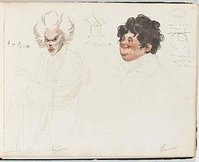

Adrien-Marie Legendre
Biografía
Adrien-Marie Legendre (París, 18 de septiembre de 1752 – Auteuil, 10 de enero de 1833) fue un matemático francés cuyas contribuciones abarcan la estadística (método de los mínimos cuadrados), la teoría de números (ley de reciprocidad cuadrática, conjetura sobre la distribución de los primos), la geometría (polinomios y transformada de Legendre) y el análisis (funciones beta y gamma). También participó en trabajos de geodesia y en la comisión que definió el metro como unidad de longitud. Fue presidente de la Academia de Ciencias de Francia (1805-1806) y miembro de varias academias europeas.
Historia
Formación y primeros años (1752-1782).
• Nació en una familia acomodada y se educó en el Collège Mazarin, donde defendió en 1770 una disertación conjunta de física y matemáticas.
• Entre 1775 y 1780 enseñó matemáticas en la École Militaire de París; en este periodo publicó un premiado Tratado sobre el
tiro de proyectiles en medios resistentes (premio de la Academia de Berlín, 1782).
Consolidación profesional (1783-1799).
• El 30 de marzo de 1783 ingresó como ingeniero ayudante en la Academia de Ciencias de Francia y fue elegido miembro asociado en 1785.
• Ese mismo año enunció, sobre ideas de Euler, una nueva forma de la ley de reciprocidad cuadrática.
• En 1787 integró, junto con Méchain y Delambre, la comisión franco-británica que midió el arco meridiano París-Greenwich para afinar el sistema
métrico.
• Fue elegido Fellow de la Royal Society en 1789.
Años revolucionarios y aportaciones clave (1790-1815).
• Durante el Terror (1793-1794) se ocultó en París y perdió gran parte de su fortuna; en 1793 contrajo matrimonio con Claudine Couhin.
• Miembro fundador (1795) de la Sección de Matemáticas del Instituto Nacional de Ciencias y Artes.
• Publicó el Essai sur la théorie des nombres (1798) --donde bosquejó el futuro teorema de los números primos-- y el célebre
Éléments de géométrie (1794, 20 ediciones en vida).
• Sus cálculos de mecánica celeste le llevaron a idear el método de los mínimos cuadrados, publicado en 1806 como apéndice a
Nouvelles méthodes pour la détermination des orbites des comètes.
Última etapa (1812-1833).
• En 1812 sucedió a Lagrange en el Bureau des Longitudes.
• El rechazo a respaldar al candidato oficialista en 1824 le costó la pensión de la École Militaire (restablecida en 1828).
• Nombrado Oficial de la Legión de Honor en 1831.
• Obras maduras: los tres volúmenes de Exercices du calcul intégral (1811-1819) y el monumental Traité des fonctions elliptiques
(1825-1829), piedra angular para Abel y Jacobi.
Legado científico.
• Polinomios de Legendre y sus aplicaciones en física (armónicos esféricos).
• Transformada de Legendre en mecánica clásica y termodinámica.
• Introducción del símbolo Γ y normalización de la función gamma.
• Conjetura de Legendre (existe siempre un número primo entre n2 y (n+1)2).
• Su nombre figura entre los 72 científicos grabados en la Torre Eiffel; el cráter lunar Legendre y el asteroide (26950) honran su
memoria.
Muerte
Tras una larga enfermedad, Legendre falleció en Auteuil el 10 de enero de 1833, a los 80 años. Su viuda conservó minuciosamente sus documentos y objetos personales; a su fallecimiento (1856) fue enterrada junto al matemático en el cementerio local, legando la casa de campo familiar a la comunidad.
El falso retrato
Durante casi dos siglos la imagen que ilustraba a Adrien-Marie Legendre era, en realidad, la del político revolucionario Louis Legendre (1752-1797). El malentendido se detectó en 2009, cuando el historiador Peter Duren halló en un álbum de caricaturas de 1820, pintadas por Julien-Léopold Boilly, el único retrato auténtico conocido del matemático. Desde entonces la caricatura de Boilly sustituye al antiguo grabado en manuales y enciclopedias.
Retrato de Louis Legendre que se confundió con el de Adrien-Marie Legendre.

Caricatura acuarelada de Adrien-Marie Legendre (izquierda) junto a Joseph Fourier (derecha), obra de J.-L. Boilly, c. 1820.
Referencia (formato APA):
Wikipedia contribuidores. (2025, 19 mayo). Adrien-Marie Legendre. En Wikipedia, La enciclopedia libre. Recuperado el 19 de mayo
de 2025 de https://es.wikipedia.org/wiki/Adrien-Marie Legendre.